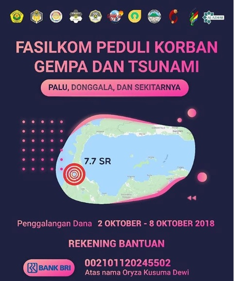
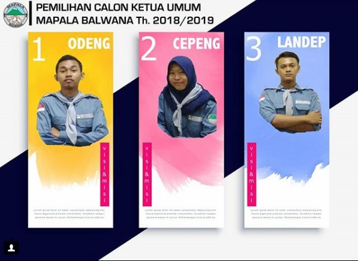
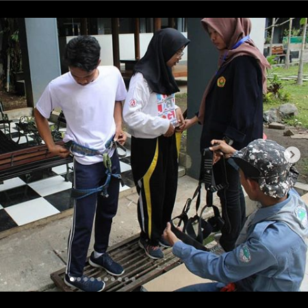
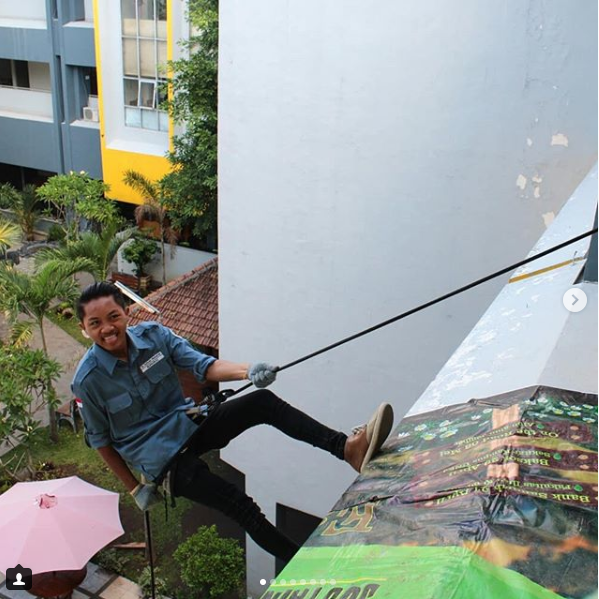
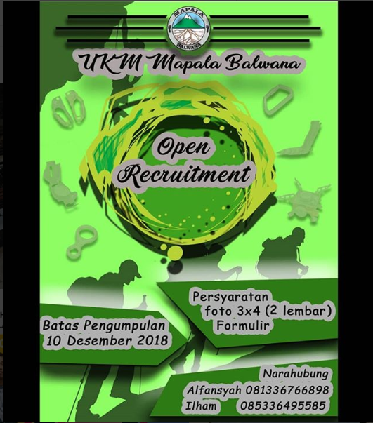

Beranda > Balwana
UKM BALWANA
VISI
"Membentuk pribadi anggota yang tanggap akan kelestarian alam dan lingkungan, memiliki rasa persaudaraan dan loyalitas yang tinggi dalam berorganisasi, serta bersedia mengabdi kepada Tuhan, bangsa, dan tanah air."
MISI
- Menyelenggarakan kegiatan yang mendukung terciptanya kelestarian alam.
- Berperan aktif dalam berbagai kegiatan pengabdian masyarakat.
- Menjalin dan mempererat tali persaudaraan antar sesama pecinta alam di Indonesia.
- Menjunjung tinggi loyalitas terhadap organisasi.
TERKINI
Fasilkom Peduli, Oktober 4, 2018

Fasilkom peduli korban Gempa dan Tsunami Palu, Donggala, dan sekitarnya. Mari berbagi kebahagiaan bersama dengan saling peduli antara satu dengan lainnya dan tetap bergotong royong dalam membangun bangsa.
About Us

Hai sobat Mapala ! Kami sedang melakukan Pemilihan Ketua Umum Mapala Balwana periode 2018-2019
Lihat disini -->
Post Populer Lainnya



Follow Us
 |
 |
 |